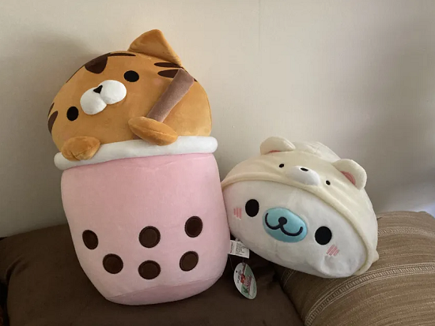

It's my birthday! I'm 24 now (I said I was 24 on my about page before today because I was afraid I'd forget to update it, but now it's official). I normally hate the attention that comes from telling people it's my birthday, but this year I'm trying to let myself enjoy things.
I'll be keeping this short. I made plans with some IRLs and we went to an arcade. This place was HUGE (to me) and loud and overstimulating, but it was awesome lmao. They had a ton of crane machines for these adorable plushies:
Thankfully my friend has an addiction and is goated at crane games, so they very kindly won me these two boys:
LOOK AT THEMMMM. Thank you friend :')
Another highlight was that I finally got to sing karaoke! I expected their song selection to be much worse, a lot of western karaoke places are going to be flooded with 2010s pop like Katy Perry and Kelly Clarkson (which I don't really enjoy, lol) but there was a good amount of rock classics that I knew. After a few rounds we started loading up karaoke videos on Youtube and started singing from those off speaker. I did a beautiful rendition of Bakamitai. I thought I wasn't too bad of a singer but hearing the recordings the next day was very humbling.
I was feeling really in my head about going out but I'm glad I committed to going. My social battery dies quickly so thank you to my friends for being so understanding lol.
And then I had a birthday Discord call with other IRLs which ended up in an argument between them, with them separately complaining to me in DMs aftewards, which ruined my night! Dear lord please get me new friends this year pleaseeeeeee
Going to keep the depressing stuff to a minimum: 23 was by far the worst year for me, somehow one-upping 22, and I don't know if 24 is going to be better! But I at least have plans to improve things. I set a goal for myself that I would get a job by the end of the year, and I think that it's doable albiet requiring some hard work. I will try to practice being hopeful this year and maybe 25 won't hit me like a brick.